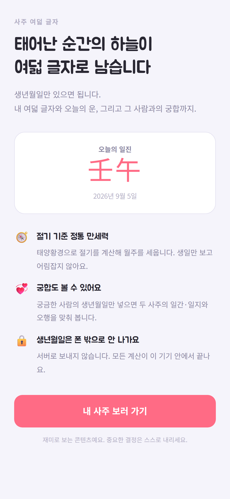

출시됨 · 토스 미니앱
잃어도
계좌는 그대로
비트코인·이더리움·솔라나·리플의 실시간 시세로 레버리지 롱과 숏을 연습합니다. 수수료와 펀딩비, 청산까지 무기한 선물 규칙 그대로 계산하고 돈만 가상입니다.

- 실시간 시세
- 최대 125배
- 롱 · 숏
- 수익률 랭킹
토스 앱에서 열립니다. 검색창에 ‘해외 코인 선물 챌린지’
나인투식스랩
토스 안에서 바로 열립니다. 설치도, 회원가입도, 로그인도 없습니다.
출시됨 · 토스 미니앱
비트코인·이더리움·솔라나·리플의 실시간 시세로 레버리지 롱과 숏을 연습합니다. 수수료와 펀딩비, 청산까지 무기한 선물 규칙 그대로 계산하고 돈만 가상입니다.
토스 앱에서 열립니다. 검색창에 ‘해외 코인 선물 챌린지’
출시됨 · 토스 미니앱
태양황경으로 절기를 계산해 사주 여덟 글자를 세웁니다. 오늘의 운과 궁합까지 보는데, 모든 계산이 기기 안에서 끝납니다.

토스 앱에서 열립니다. 검색창에 ‘사주 여덟 글자’
준비 중
답이 하나뿐인 판만 내보냅니다. 논리만으로 끝까지 풀립니다. 판은 기기 안에서 만들어서, 연결이 끊겨도 계속 풀 수 있습니다.

기능을 늘리는 대신 넣은 것을 끝까지 다듬습니다. 아래 셋은 앱을 만들 때마다 지키는 것입니다.
서버로 보내야 할 이유가 없으면 보내지 않습니다. 사주와 스도쿠는 밖으로 나가는 데이터가 아예 없습니다.
스도쿠는 판을 기기 안에서 만듭니다. 지하철에서 연결이 끊겨도 하던 판이 그대로 이어집니다.
광고를 봐야 다음 판이 열리는 구조는 만들지 않습니다. 광고는 보고 싶은 사람만 봅니다.